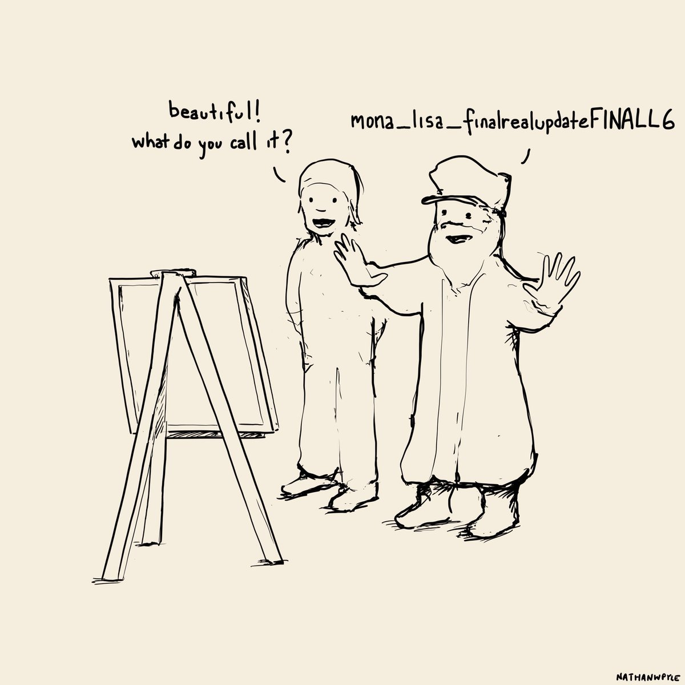
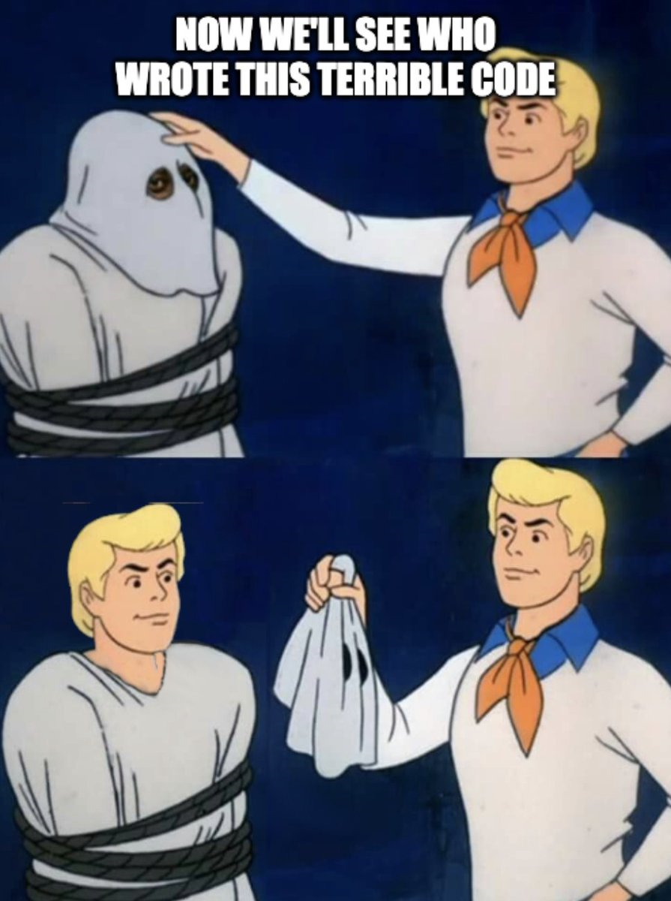
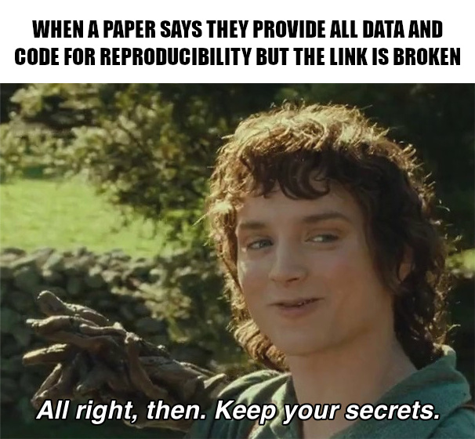
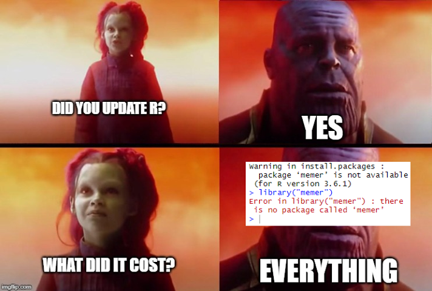
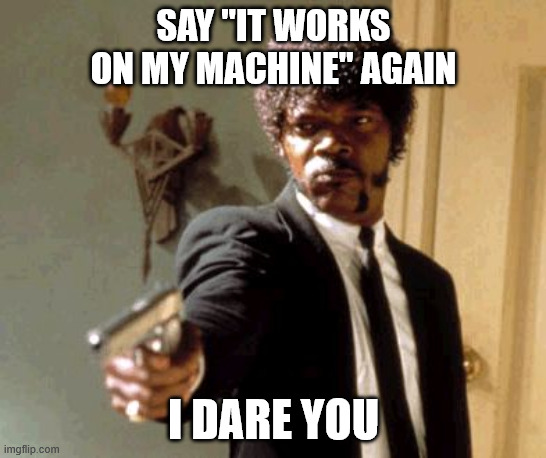
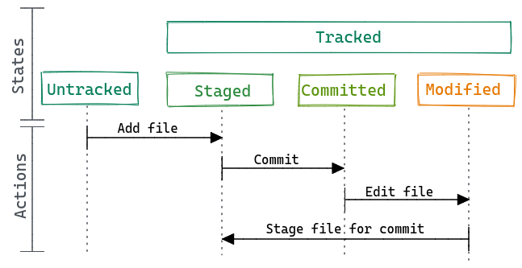
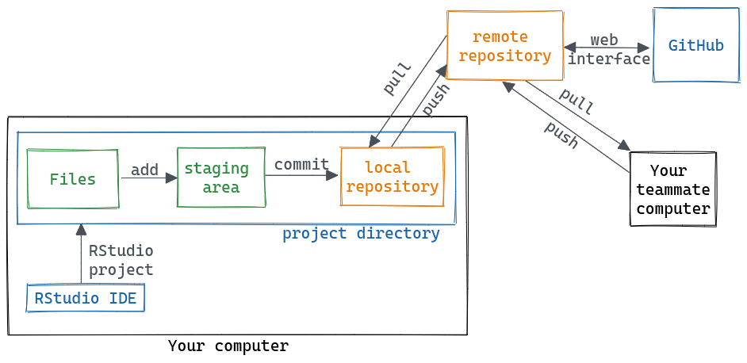
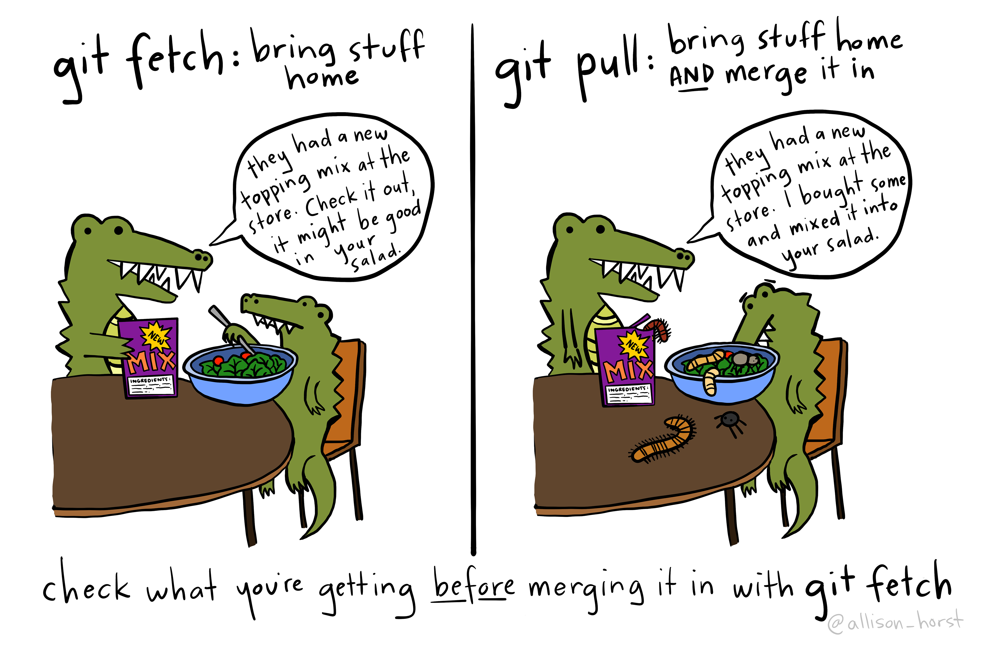
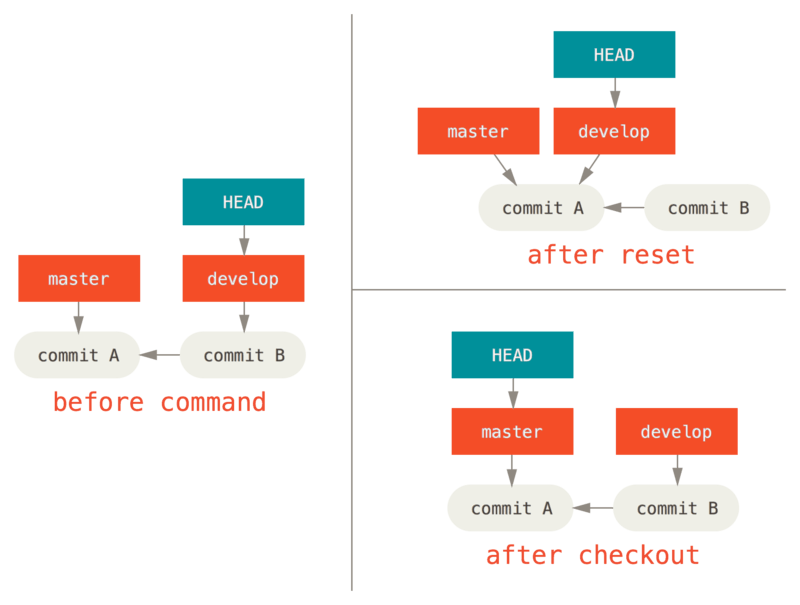
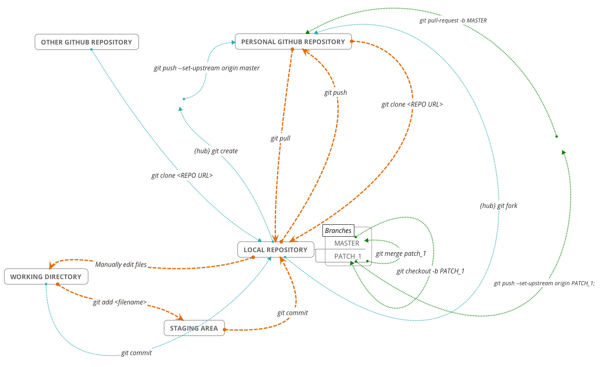

Git intro and resources
June 16, 2026
What, why, when & how?
What is git?
Git is a distributed version control system.
\[ git \ne GitHub \]
CLI tool, but various GUIs exist1
Why use git?






Why use git?
The hope is that it can encourage and facilitate reproducible science, and just make your life easier, by, among other things:
- Providing a free “backup” of your code on a remote server like GitHub.
- Allowing you to work “seemlessly” across different computers (or servers like CalcUA).
- Collaborate at various levels of complexity (from single branch projects up to reviewed pull requests with automated tests)
- Sharing code for publishing and making it citable, cf. Zenodo https://tutorials.inbo.be/tutorials/git_zenodo/, https://onderzoektips.ugent.be/en/tips/00002267/,
- Tracking the history of your projects, allowing you to reference specific snapshots in time and see what was changed, why, when and by whom.
- Enabling you to easily revert mistakes or to jump back in time.
- Easily deploying a (static) website for a project, host readmes or even R/Python notebooks.
- Utilising project management tools like issues, wikis or (caveat emptor).
- Facilitating contributing to open source projects.
- Making it easier to version packages and dependencies (by combining it with tools like
renv,conda/virtualenvenvironments or containers).
When to use git?
Git is best utilised for plain-text files of any kind.
- Code: from smaller scripts to packages and software
- Notes: readme files, personal notes or wiki system, markdown-based articles/presentations/websites/books
- LaTeX documents (cf. Overleaf)
- Storing config or dot files (e.g.
.bashrc) - Smaller datasets
When not to use git?
Avoid git for binary files (Office documents, images, etc.)1 or large files2.
How to use git?

Source: XKCD
General overview

Source: Allison Horst
General overview

Source: https://reproducibility.rocks/materials/day2/02-git/
Further reading
My own creations:
- Introduction + some info on collaboration [beginner]: https://pmoris.github.io/git-workshop/index.html
- How the internals of git work [advanced]: https://pmoris.github.io/git-gud/#/
General guides:
- The Pro Git book, contains everything and more [intermediate]: https://git-scm.com/book/en/v2
- The basics covered in a single page [beginner]: https://rogerdudler.github.io/git-guide/
- Tutorials on various git operations [beginner]: https://www.atlassian.com/git/tutorials/
Complete overviews for beginners
- General book on reproducible science: https://book.the-turing-way.org/reproducible-research/vcs/vcs-git-in-research/
- Software carpentries workshop: https://swcarpentry.github.io/git-novice/
- Excellent online book by the R celebrity, Jenny Bryan: https://happygitwithr.com/
- Clean and short overview: https://reproducibility.rocks/materials/day2/02-git/
- Step-by-step example slides: https://rdatatoolbox.github.io/chapters/course-git.html
- Shorter but thorough overview: https://r-cubed-intro.rostools.org/sessions/version-control
- Meme-assisted teaching: https://neurathsboat.blog/post/git-intro/
- Great guide by British Ecological Society focused on code for research: https://assets.britishecologicalsociety.org/2025/12/BES-Reproducible-code-guide_2025.pdf (also see their other guides)
- https://rockefelleruniversity.github.io/RU_reproducibleR/presentations/singlepage/github.html
- https://reproducibility-workshop.readthedocs.io/en/latest/day-1/exercise-4-git.html
- I could keep going…
Interactive visualisations and playgrounds
- Learn how git branching works interactively
- Visualizing Git Concepts with D3 (a brilliant resource to get a feel for what different commands actually do!)
- A visual reference guide for most situations in git
Git internals - for those who like to dive deep
A highly recommended guide for the perplexed (advanced beginners): http://think-like-a-git.net/
Git from the Bottom Up: https://jwiegley.github.io/git-from-the-bottom-up/
Git from the inside out: https://maryrosecook.com/blog/post/git-from-the-inside-out
Visualizing Git’s Merkle DAG with D3.js: https://tylercipriani.com/blog/2016/03/21/Visualizing-Git-Merkle-DAG-with-D3.js/
Git for Computer Scientists: http://eagain.net/articles/git-for-computer-scientists/
Git is a Directed Acyclic Graph and What the Heck Does That Mean?: https://medium.com/girl-writes-code/git-is-a-directed-acyclic-graph-and-what-the-heck-does-that-mean-b6c8dec65059
Specifics
Setup and config
# set email to be associated with commits
git config --global user.email 'brc@rockefeller.edu'
# show email
git config --global user.emailRemotes
Hosting services like GitHub, Bitbucket, and GitLab.
All very similar. Slight differences in naming conventions (e.g. pull vs merge requests). Offer different higher-level features like issues, pull requests, wikis, project boards, etc.

Source: https://reproducibility.rocks/materials/day2/02-git/
SSH keys
Setup SSH-based authentication so that you can clone/push/pull via the SSH protocol instead of HTTPS (otherwise you have to constantly provide your username).
git@github.com:pmoris/my-repo.git
vs
https://github.com/pmoris/my-repo.git
Public vs private repositories
Remote repositories can (usually) be made public or private.
You can even keep a git repo local only. So there really is no excuse not to use git from a security/privacy standpoint.
Avoid storing git repositories on OneDrive
Ignoring things
List files you do not want to track in .gitignore.
Useful for sensitive data, secrets, temporary files/caches, etc.
Branches
https://pmoris.github.io/git-workshop/chapters/5-branching.html
Diff’ing
Collaboration
git stash
Use meaningful commit messages

Split up changes with interactive staging
Makes it easier to chunk changes into sensible commits. Cleaner history + easier to selectively undo/apply changes.
Very easy to do with a dedicated GUI or directly within RStudio/VScode.
Alternative, use git add -i: https://git-scm.com/book/en/v2/Git-Tools-Interactive-Staging
Potential conundrums
Fixing things or rewriting history
Up-to-date does not mean what you think it means
Fetch vs pull
git fetch will check the remote and tell you about updates.
git pull will pull them in by running git fetch followed by git merge.

Reset vs checkout vs restore

Checkout and detached head

Terminology
- Repository (or repo): place where you store your code, your files, and each file’s revision history.
- Branch: A “branch” is a line of development. The most recent commit on a branch is referred to as the tip of that branch.
- E.g.,
mainandmaster. Check withgit branch -a.
- E.g.,
HEAD: A named reference to the commit at the tip of a branch. See https://jvns.ca/blog/2024/03/08/how-head-works-in-git.- Remote: A repository stored on a git server like GitHub, instead of it being local to your computer.
- E.g., Often uses a name like
origin. Check withgit remote -v.
- E.g., Often uses a name like
- Merging. Take changes from one branch and apply them to another one. Related to pull/merge requests.
- Fast-forward: a simple merge where one branch is a simple linear extension of another.
- Cloning: Downloading a (full) copy of a repository from a remote git server.
- Forking: Creating a new repository that contains a copy of another one (including file history).
- Upstream: The branch on the original repository that was forked.
Cheatsheet

More syntax
Tip
For more advanced terminology, like HEAD~, fast-forwarding, reset vs revert, checkout and detached HEAD, see:
Caret and tilde syntax
fin